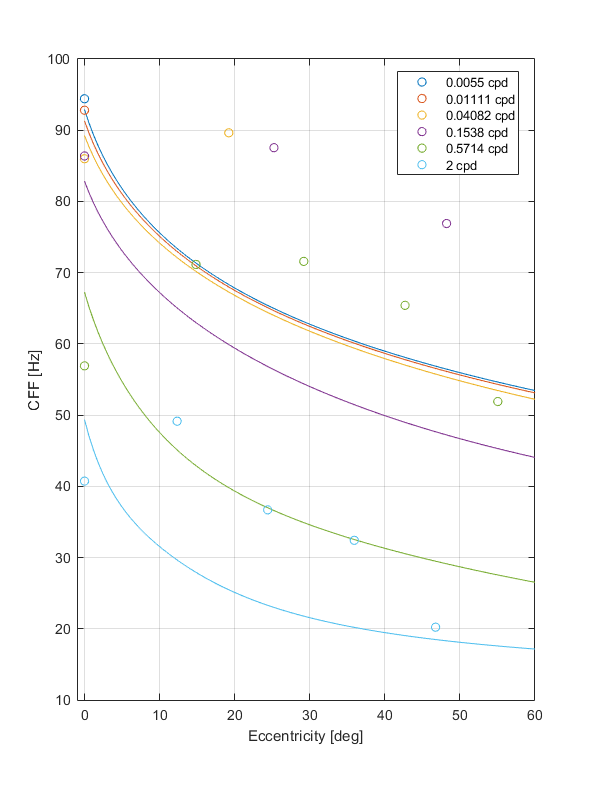
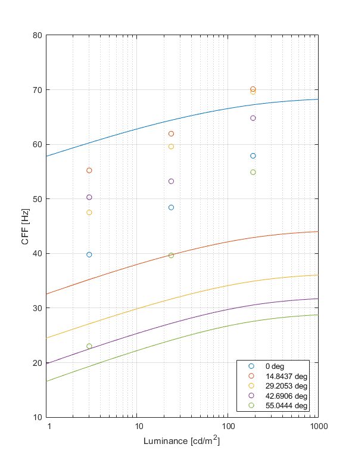
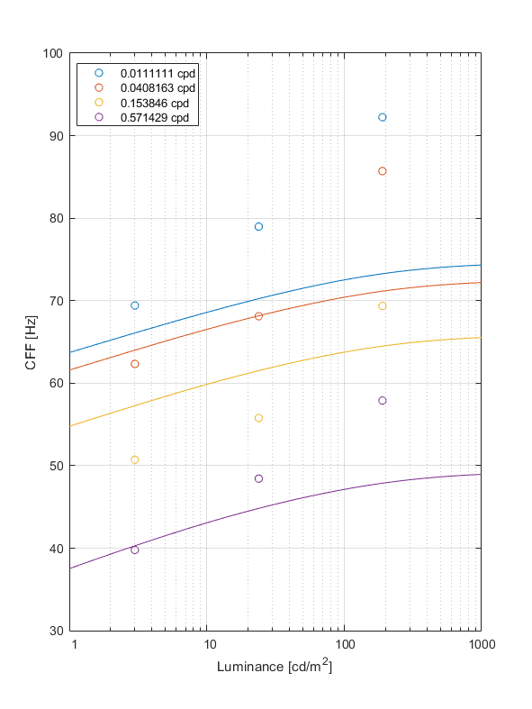

CSF model fit: st_temp_ecc
Report generated on 22-Oct-2021 17:13:12
Fitting error
| Dataset | Fitting error | Sensitivity adjustment |
| CSF from FovVideoVDP | CSF from FovVideoVDP |
| Average | 10.8199 [dB] | N/A |
| modelfest | 1.26835 [dB] | 1 |
| hdrvdp_csf | 0.953681 [dB] | 0.89546 |
| laird2006 | 2.9722 [dB] | 0.976916 |
| virsu1979 | 3.86498 [dB] | 0.945991 |
| krajancich2021 | 40.8342 [dB] | 1.2464 |
Model parameters
CSF from FovVideoVDP
p.S_0 = 3.27384;
Legend

↸Dataset: ModelFest
Achroatic CSF as a function of frequency

↸Dataset: HDR-VDP CSF
Achromatic CSF as a function of frequency

Achromatic CSF as a function of size

↸Dataset: Laird et al. 2006
Achromatic CSF as a function of temporal frequency for different spatial frequencies

↸Dataset: Visual resolution, contrast sensitivity, and the cortical magnification factor
Contrast sensitivity of central and peripheral vision as a function of spatial frequency and eccentricity

↸Dataset: Eccentricity-dependent spatio-temporal flicker fusion
Critical fusion frequency at eccentricities

Critical fusion frequency at luminance levels

Critical fusion frequency for spatial frequencies
